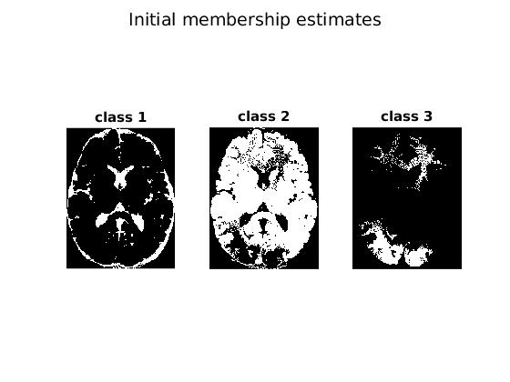
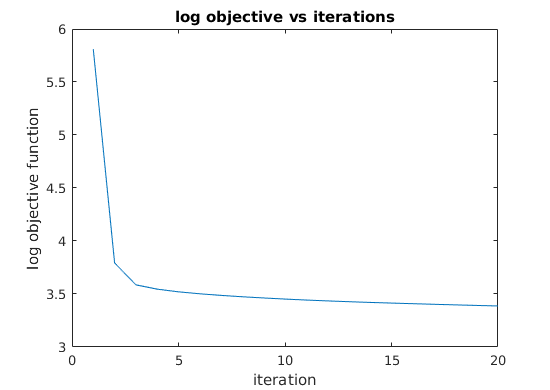
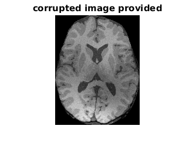
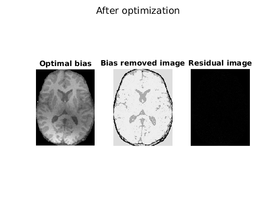
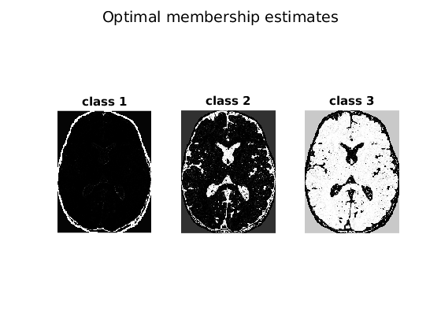

Contents
clear; close all; load('../data/assignmentSegmentBrain.mat')
Initializing parameters
K = 3; q = 2.0; fprintf('We used q = %d\n',q); fprintf('We used 3*3 gaussian as neighborhood mask\n'); mask = fspecial('gaussian'); % 3*3 mask bias_initial_value = 0.5; [m,n]=size(imageData); image = imageData.*imageMask; imageDataLinear = reshape(image,m*n,1); imageMaskLinear = reshape(imageMask,m*n,1); u_init = zeros(m,n,K);
We used q = 2 We used 3*3 gaussian as neighborhood mask
Initialising the memberships uij
The initialization of membership values was done by bracketing the
range of intensity values of pixels inside the mask.
The motivation was that the initialization should be binary and approximately uniformly
spread across the range of intensity values. The value of class means is
just the value of means over the initial segmented image given by the
above range division algorithm.
maxi = max(max(image)); mini = min(min(image)); range = maxi-mini; class_means = zeros(1,K); for i=1:K u_init(:,:,i) = (image >= mini + range* (i-1)/K).*(image < mini + range * i/K); u_init(:,:,i) = u_init(:,:,i).*imageMask; class_means(i) = mini + range*(2*i-1)/(2*K); end % Cropping initial memberships and image col_sum = sum(imageMask,1);row_sum = sum(imageMask,2); row_min = find(row_sum>0,1,'first');row_max = find(row_sum>0,1,'last'); col_min = find(col_sum>0,1,'first');col_max = find(col_sum>0,1,'last'); crop_rect = [col_min, row_min, col_max-col_min, row_max-row_min]; image = imcrop(image,crop_rect); cropped_mask = imcrop(imageMask,crop_rect); [m,n]=size(image); u = zeros(m,n,K); for k = 1:K u(:,:,k) = imcrop(u_init(:,:,k),crop_rect); end subplot(131), imshow(u(:,:,1)); title('class 1'); subplot(132), imshow(u(:,:,2)); title('class 2'); subplot(133), imshow(u(:,:,3)); title('class 3'); suptitle('Initial membership estimates'); figure; % Initializing the bias bias = zeros(m,n)+bias_initial_value; objective_values = []; d = zeros(m,n,K); stoprint = sprintf('%d, ',class_means); fprintf('Initial class means %s\n',stoprint);
Initial class means 1.539596e-01, 4.618789e-01, 7.697981e-01,
Optimization
for it = 1:20 % Calculating needed parameters bias_conv = conv2(bias,mask,'same'); bias_sq_conv = conv2(bias.^2,mask,'same'); % Finding Optimal membership for k = 1:K d(:,:,k) = image.^2-2*class_means(k)*(image.*bias_conv)+class_means(k)^2*bias_sq_conv; d(:,:,k)=d(:,:,k)+(d(:,:,k)==0)*mean(mean(d(:,:,k))); end dinv_raised = real((d).^(1/(1-q)));dinv_denom = sum(dinv_raised,3); for k = 1:K u(:,:,k) = dinv_raised(:,:,k)./dinv_denom; end % Finding optimal class means for k = 1:K class_means(k) = sum(sum((u(:,:,k).^q).*image.*bias_conv))/sum(sum((u(:,:,k).^q).*bias_sq_conv)); end % Finding optimal bias sum_uc = zeros(m,n);sum_ucsq = zeros(m,n); for k=1:K sum_uc = sum_uc + (u(:,:,k).^q)*class_means(k); sum_ucsq = sum_ucsq + (u(:,:,k).^q)*(class_means(k).^2); end bias = conv2(image.*sum_uc,mask,'same')./conv2(sum_ucsq,mask,'same'); % Finding objective function value objective = zeros(m,n); for k = 1:K objective = objective + (u(:,:,k).^q).*d(:,:,k); end objective = sum(sum(objective)); objective_values = [objective_values log(objective)]; end stoprint = sprintf('%d, ',class_means); bias_removed_image = zeros(m,n); for k = 1:K bias_removed_image = bias_removed_image + class_means(k)*u(:,:,k); end residual_image = image-bias_removed_image.*bias; fprintf('Optimal class means %s\n',stoprint); plot(objective_values); xlabel('iteration'); ylabel('log objective function') title('log objective vs iterations'); figure; imshow(image); title('corrupted image provided');colormap(gray); figure; subplot(131), imshow(bias); title('Optimal bias'); subplot(132), imshow(bias_removed_image); title('Bias removed image'); subplot(133), imshow(residual_image); title('Residual image'); suptitle('After optimization'); figure; subplot(131), imshow(u(:,:,1)); title('class 1'); subplot(132), imshow(u(:,:,2)); title('class 2'); subplot(133), imshow(u(:,:,3)); title('class 3'); suptitle('Optimal membership estimates');
Optimal class means 8.417848e-02, 6.666229e-01, 9.376909e-01,   